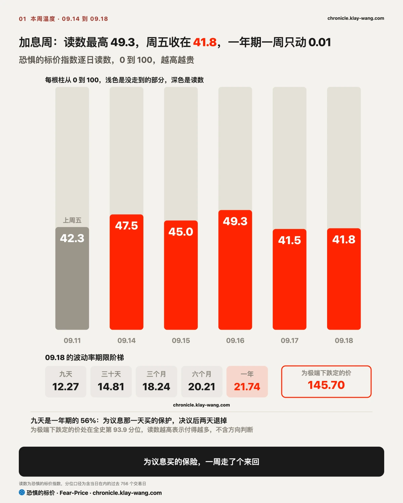
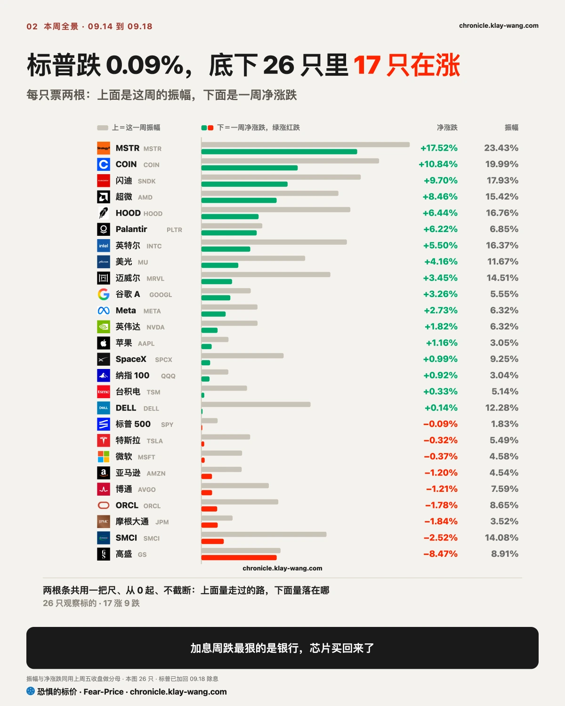
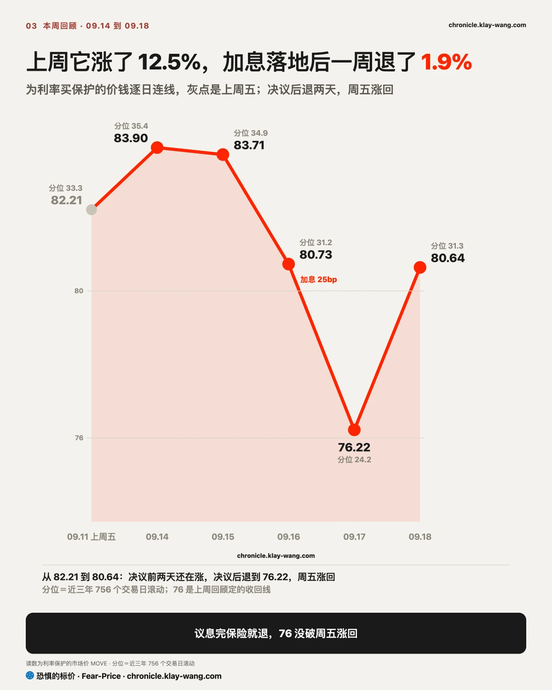
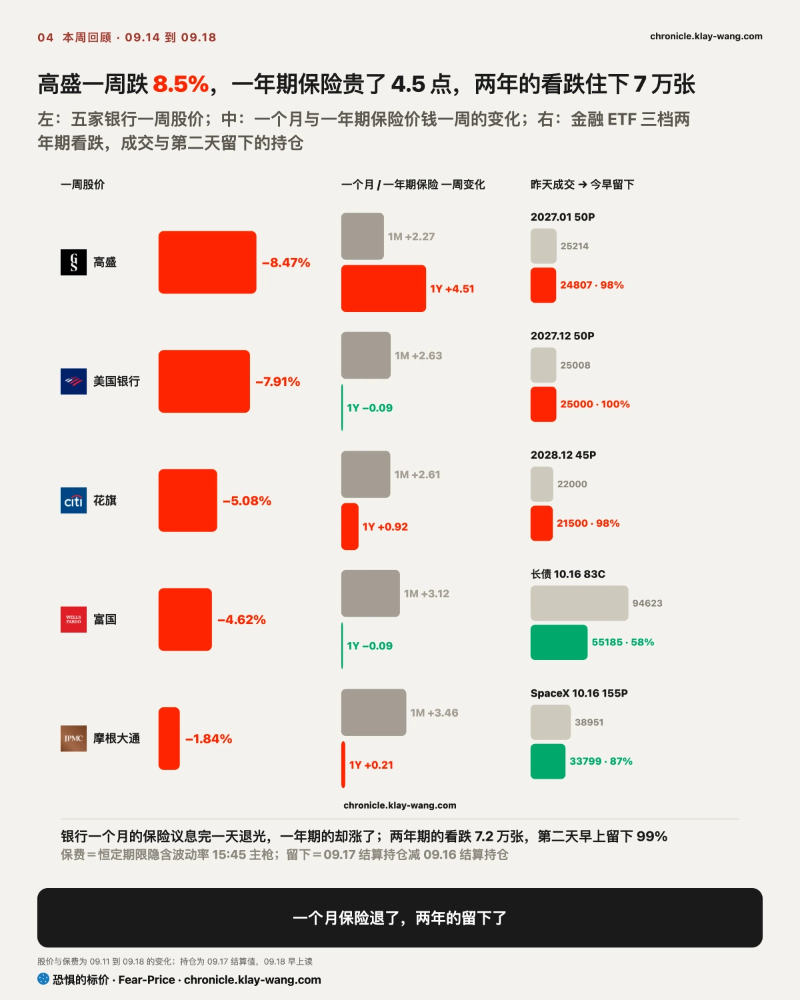
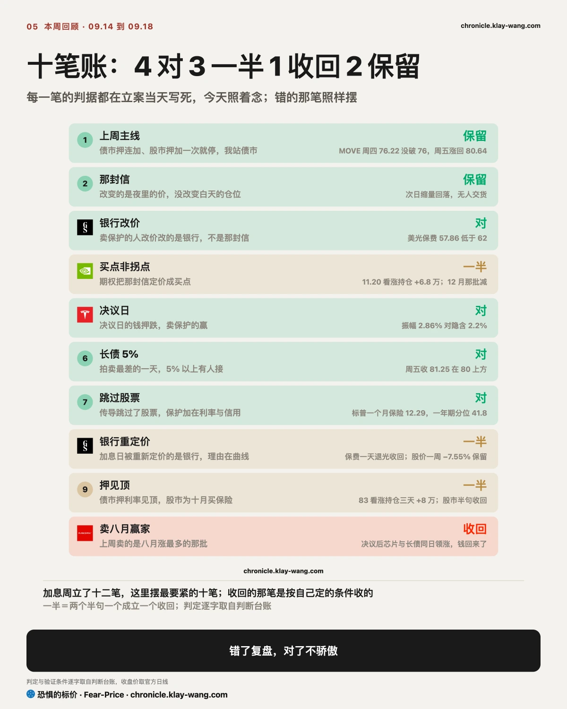

恐惧的标价指数（Fear-Price Index）· 2026-09-18 · 读数 41.8/100：一年期波动率 VIX1Y 为 21.74，处于近三年第 41.8 百分位，高即贵。逐日台账与口径 → chronicle.klay-wang.com · 转载注明：恐惧的标价指数 · Fear-Price
上周五 42.3，议息那天 49.3，周五 41.8。为那场会买的一年期保险，会开完就退回原点，一周下来没有人为一年后的事多买一份保护。对你的意思：市场没把这次加息当成一轮的开头，只当成一次会。目前 K 指数 1.97，要跌破 1 得 VIX 涨过 29，历史在 chronicle.klay-wang.com/kindex，指数本身在 chronicle.klay-wang.com/fear-price。

标普一周 −0.09%，等于没动，加回周五除息也是零。但底下拉开了 26 个点，涨跌全在个股，一周的涨跌分成两种。
第一种是白天买出来的。闪迪一周 +9.7%，跳空是负的，全是开盘到收盘涨出来的；美光、AMD 同型；加密三只一周 +6% 到 +17%，涨幅几乎全在周五一天，白天买出来的。这一组的共同点是，周一那封 AI 放缓的信砸出的坑，四天里被白天的钱填平，而且买的人自己在配保护，闪迪、英特尔的保险都在涨价。白天买出来的涨，留得住的概率大。
第二种是涨在夜里的。谷歌一周 +3.3%，全部是跳空给的，白天反而 −2.5%；Meta、特斯拉同型，五天里天天高开被卖。这种涨白天没人接，第二天开盘不高开就没了。手里是这三只的，涨了多少先放一边，看开盘之后有没有人买。
为什么要把跳空和白天分开看。高开是隔夜的消息和期货把价推上去的，开盘那一下没有成交量，只是一个报价，谁都没有真的付过这个价。开盘之后的涨跌才有人掏钱：白天一路涨，是买单追着卖单往上抬，量越大，接的人越多；高开之后一路跌，是开盘挂在高处的卖单没人接，被压下来，跌到收盘还在低位，说明兑现的人比进场的人多。尾盘那一小时最诚实，那是当天最后一次表态，收在全天最高一成，是有人愿意把仓位带过夜；收在最低一成，是有人赶在收盘前交货。成交量是这一切的分母：缩量的回落只是没人问津，放量的回落才是有人在卖。三巫日多一层，做市商手里卖出去的期权那天到期，他们会把价钉在让最多合约作废的位置，SpaceX 收在 150 和 155 正中间就是这么来的。
跨资产一周：长债在拍卖最差的一周反而涨了；美元涨、日元跌，日本央行加息日元反而跌了 2%；黄金、白银、铜涨，油没涨。09.10 那期写被重新定价的是能源对其他一切，这周反过来了，加息落地的一周，实物涨了，油没涨。

上周回顾写，债市押连加、股市押加一次就停，我站债市，下周有一边要改口。这周两边都动了一下又回去。
股票这边先改口又退回。为股票买保护的价钱议息那天过了 14，第二天退回 12.3，周五三巫日过去也没回去，那批十月的保护是为到期日买的，不是为加息。押跌的钱说得更直接：押议息那天会跌的钱占 54%，押下周的到周五只剩 15%，卖保护的人赢了。股票期权已经把加息当过去式。
债市没有。为利率买保护的价钱周四离上周定的 76 只差 0.22 没破，周五涨回 80.64；两年期收益率一周涨 12 个基点，掉期押明年中之前还有三四次。站债市那句留着。
对你的意思：股票按加一次算，债市按三四次算。手里的票是跟股票走的（芯片、存储、加密、广告），这周的价已经把加息忘了；手里的票是跟债市走的（银行、公用事业、长债），这周的价还在按一轮加息算。两边中间那道缝，落在银行身上。
培风客这周有个说法值得记：第一次加息一般不扰动，第二三次之后大家才会争论是加完了还是进了周期；而周期有多长，看的是财政和 AI 资本开支，不全在联储，所以中期选举的权重和 FOMC 差不多。用我们的数对，市场现在就是按一次算，只有银行按周期算。下一个可验证的时点是 10 月 28 日，那是第二次；第二次之后股票的一年期保险还没站上 23，他说的叙事就还没改。

市场把这次加息定价成一次事件，只在银行身上定价成一个周期。要看懂这句，得从银行怎么收钱说起。
第一步看银行怎么收钱。银行给存款付短端利息，从贷款收长端利息，借短贷长，中间那道差就是它的利润。议息那天短端冲到 2024 年以来最高，短端和十年期的差是 6 月底以来最平。短端往上走而长端不动，这道差就窄了。
第二步看利率一涨谁受影响。加一次息，影响的是这一季的利差；加一轮息，影响的是两年的利差，银行被重新定价的幅度取决于市场按几次算。第三步是债市给的答案：两年期收益率周五 4.74%，为利率买保护的价钱涨回 80.64，掉期押还有三四次。按三四次算，受影响的就是两年的利润。
第四步用期权市场验证。一个月的保险，五家周一到周三连涨、周四一天退光，那是为议息买的；一年期的保险，高盛一周贵了 4.5 点，全表第一。周四有人买了金融 ETF 2027 到 2028 年三档看跌 7.2 万张，周五早上留下 99%。为一次会议买的保险会开完就卖，为一整轮加息买的两年保险才留得住。
四步走完，本周的跌幅就能归位。五家全跌，跌得最多的是高盛，交易收入占比越高的跌得越多；高盛周五收 942 跌破 200 日线，13.7 倍市盈率比近三年九成的时间便宜。便宜、破位、保险在涨，三样同时出现，市场定价的是这轮加息会影响银行两年的利润，不是这一次会议。这个位置如果是我，要么等一年期保险不再涨价，要么等 10 月再加息的定价从六成往下走，两个都没到之前，便宜只是便宜。
如果 09.30 前高盛的一年期保险回落到上周五的水平以下，或者金融 ETF 收回 57，说明银行只是议息那天的一次性重定价，这条判断收回。

我们的看法分三段。第一次到第二次加息之间，也就是从现在到 10 月 28 日，大概率是颠簸不是趋势：过去 37 次加息里和这次最像的 7 次，三个月后多半是涨的，但一个月内都先颠过一下；路透统计 1994 年以来六轮首加，60 天后标普平均跌 3.6%，12 个月后平均涨 8.3%。这一段里，市场按一次算，钱在白天挑当天能兑现的东西买，这周就是这个样子。
第二三次之后才是重新定价，受影响的先后有顺序：先是借钱多、回本慢的一头，云厂商的机房、地产、公用事业、靠利差的银行；后是账上现金流近的一头，收钱早的芯片、有定价权的高毛利生意。杰富瑞统计首次加息后 12 个月能源涨得最多、科技其次、地产最差，我们这周的数已经在按这个顺序排：公用事业是全周最差的板块，银行按两年利差重算，芯片存储被白天的钱接走。
所以保护该在第二次之前买，不是之后。现在是保护最便宜的时候：标普一个月保险 12.29 在三年里最便宜的一成，英伟达一个月保险在三年里最便宜的一天，一年期保险 41.8 分位不贵不便宜。第二次加息之后这些价钱会变，一年期站上 23 那天，保护就贵了。这个位置如果是我：仓位不减，用一年期的保护把靠芯片和存储撑起来的那一半保起来；白天买出来的那组（存储、加密）只在周一结算留住一半以上再加，加了就配保护；夜里涨的那组（谷歌、Meta、特斯拉）不追高开；按周期定价的银行，便宜不是理由，等一年期保险停涨。
估值把两组分开。便宜但没人追的：英伟达 27.8 倍比五年 99% 的时间便宜，谷歌 17.5 倍比五年 95% 的时间便宜，高盛 13.7 倍比三年九成的时间便宜。贵但有人追还配保护的：闪迪 16.7 倍市净率比一年 84% 的时间贵，MSTR 1.7 倍市净率比一年 89% 的时间贵，英特尔 6.2 倍市净率比五年 99.8% 的时间贵。第二三次加息之后被重新定价的，会是贵的那组里现金流最远的，不是便宜的那组。这句的可推翻条件：10 月 28 日之后一个月，贵的那组跑赢便宜的那组，这条判断收回。
持银行的：这周的跌不止一天的事，市场把两年的利差重新算了一遍。便宜是真的，但便宜的东西这周每天都在更便宜。转机不在银行自己身上，看两个数：一年期保险哪天不涨了，10 月再加息的定价哪天掉到五成以下。那之前，跌破 200 日线守住了也不会有人追。
持芯片和存储的：周一的坑是白天的钱填的，比夜里涨出来的靠得住；买回来的人自己在配一年期保险，跟着买的人也该配。闪迪离 200 日线 68%，美光刚站上 1000，AMD 离 200 日线 58%，位置都高。下周一结算看押它们下周涨的看涨留几成，留一半以上才算有人接，留不下就是三巫日的过路钱。
持加密股的：一周涨幅几乎全在周五一天，保险同时贵了三四个点，追的人在买保护。看周一结算 MSTR 那批看涨剩多少，和存储是同一道题。
持谷歌、Meta、特斯拉的：这周的涨是夜里给的，白天每天被卖。涨幅先放一边，看周一开盘之后有没有人买，谷歌守不守 349。
持指数基金的：加息周标普没动，涨跌全在底下。下周没有议息，指数继续靠芯片和存储撑，它们要是周一结算留不住，指数也跟着松。
上周主线，债市押连加、股市押加一次就停、我站债市，下周有一边要改口：两边都动了一下又回去，站债市那句保留，改口的是股市，改完又收回。本周对的四笔：卖保护的人改价改的是银行不是那封信；议息那天的钱押跌、卖保护的赢；拍卖最差的一天长债 5% 以上有人接；传导跳过了股票。一半的三笔：那封信被定价成买点、加息日被重新定价的是银行、债市押见顶股市买保险，各成立一半。收回一笔：上周卖的是八月涨最多的那批，钱回来了。保留一笔：那封信改变的是夜里的价没改变白天的仓位。
